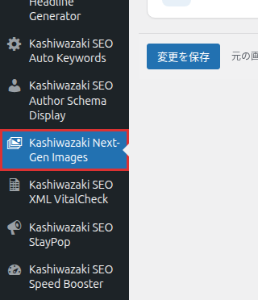
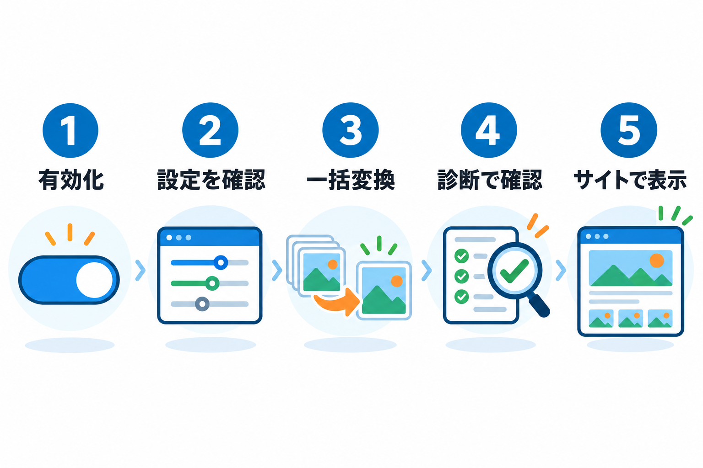

インストール・初期設定
プラグインのインストールから初期設定まで、ステップバイステップで解説します。
インストール方法
プラグインをアップロードする
プラグインのフォルダを、サイトのプラグインのフォルダ（/wp-content/plugins/）にアップロードします。管理画面の「プラグイン」→「新規追加」→「プラグインのアップロード」から ZIP ファイルを選んでも構いません。
有効化する
管理画面の「プラグイン」で「Kashiwazaki Next-Gen Images」の「有効化」を押します。プラグインの一覧の「設定」リンクからも画面を開けます。
メニューを開く
管理画面の左メニューに「Kashiwazaki Next-Gen Images」が追加されます。

左メニューの画像のアイコンが目印です。メニューは管理者にだけ表示されます。
最初にすること

診断タブでサーバーの対応状況を見る
「診断」タブの「変換エンジン」で、WebP と AVIF が「○ 利用可」になっているかを確かめます。「配信テスト」が「正常（配信できます）」かも見ます。詳しくは 診断タブ を参照してください。
設定タブを確認する
初期設定のままで使えるようにしてあります。変えるとすれば、画質（WebP は 82、AVIF は 60）くらいです。設定タブ にすべての項目の説明があります。
既存の画像を一括で変換する
新しい画像はアップロードのときに自動で変換されます。すでにある画像は「一括変換」タブの「一括変換を開始」で変換します。詳しくは 一括変換タブ を参照してください。
サイトで確かめる
サイトのページを開き、画像が普段どおり表示されることを確かめます。ブラウザの開発者ツールのネットワークの表示で、画像の形式が webp や avif になっていれば、軽い画像が使われています。
このプラグインは元の画像を削除も変更もしません。変換したファイルは、元のファイル名の後ろに「.webp」「.avif」を付けた名前で、元の画像と同じフォルダに保存します（例: photo.jpg の隣に photo.jpg.webp）。
ページキャッシュ系のプラグインやサーバーのキャッシュを使っている場合は、変換したあとにキャッシュを消してください。古いページのままだと、元の画像のまま表示されます。